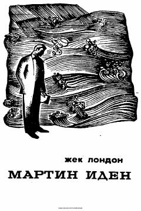

MIOddiy dengizchining yozuvchilikka erishish yo'li va jamiyatdagi yolg'onlarga qarshi kurashi haqidagi asar.
Jek Londonning ushbu mashhur romanida oddiy xalq orasidan chiqqan yosh dengizchi Martin Idenning hayot yo'li tasvirlanadi. Qahramon o'z mehnati bilan yozuvchilikda muvaffaqiyatga erishsa-da, jamiyatdagi manfaatparastlik va yolg'onni ko'rib, chuqur ruhiy tushkunlikka tushib qoladi.